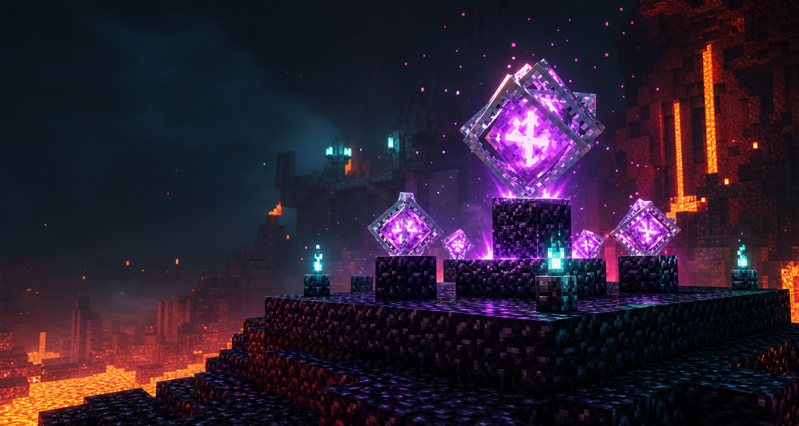

Open Modrinth
Select your Minecraft 1.21.11 Fabric profile.

Fabric 1.21.11 client helper
Place obsidian and an End Crystal in one clean sequence. Built for fast crystal setups without messy hotbar juggling.
What does it do?
Hold an End Crystal, right-click beside a block, and Crystal Obsidian briefly switches to obsidian, places it, swaps back, and places the crystal on top.
BlockForge launch
A focused Fabric utility for Minecraft 1.21.11. This GitHub Pages version is the public sales page. Use Vercel later for Stripe checkout and protected downloads.
Select your Minecraft 1.21.11 Fabric profile.
Crystal Obsidian depends on Fabric API.
Open the profile folder and go to the mods directory.
Place the jar there and start Minecraft.
Discord support
Add badr02344 on Discord for purchase questions, installation help, bug reports, or custom Minecraft mod requests.
The mod performs normal client interactions. Whether it is allowed depends on the server rules and anti-cheat.
Because the mod quickly and reliably switches between hotbar slots.
This build is for Fabric on Minecraft 1.21.11.